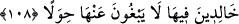

hazırladım.”[227]
Kâşifî der ki: “Bu, Allah’la likâ (buluşma) devletidir.”
Hâfız şöyle der:
Firdevs nîmeti zâhide de bize de dostun cemâli olsun
Herkesin kıymeti himmetinin yüksekliği kadardır
Mesnevî’de de şöyle denilmektedir:
Benim önümde sekiz cennetle yedi cehennem,
Şaman önündeki put gibi apaçık ve meydanda
Bundan dolayı Bâyezid Bistâmî (k.s.), şöyle demiştir: “Eğer Allah kıyâmet gününde
bana azâb edecek olursa, beni cennet ve nîmetleriyle meşgul eder.” Ona kavuşma (likâ)
ve vusûl cennetinden daha yüksek bir cennet yoktur. Hicran ve ayrılık ateşinden de daha
şiddetli de bir ateş yoktur.
Gece gündüz gam, keder ve kan yer içerim, nasıl yemeyeyim ki?!
Mâdem ki senin dîdârından uzağım, ne ile sevineyim?!
108. Orada ebedî kalacaklardır. Oradan hiç ayrılmak istemezler.
“Orada ebedî kalacaklardır.” Yâni, bu cennetlerde ebedî kalmak onlara takdir
edilmiştir. “Oradan hiç ayrılmak istemezler.” Bu cümle sürekli kalacakların hâlidir.
Yâni artık onlar için, evinden hoşlanmayan bir adamın başka bir eve taşınması gibi bir
durum söz konusu olmaz. Bulundukları yerden başka bir yere de intikal etmezler. Çünkü
oradan daha üstün bir yer yoktur. Orada her istenilen ve arzu edilen şey vardır.
İmam (Râzî) der ki: “Bu vasıf, kemalin zirvesine delâlet eder. Çünkü insan, dünyada
kendisini huzur ve saâdete götüren bir mevkie varınca, daha yükseklere tamah eder.”
Tefsîru’ş-Şeyh’te de belirtildiği üzere âyette başka yere intikâlin reddi ve ebedî
kalmanın te’kidi de kastedilmiş olabilir. Bu, onların ebedî kılınmasından kinâyedir.
Yine o şöyle der: Firdevs ile kastedilen, cennetin en üstün ve güzel bir yeri olan yeşil
tepesidir. Buraya “sürretü’l-cenne cennetin göbeği” denir.
Bir hadiste şöyle buyrulmuştur: “Cennet yüz derecedir. Her iki derece arası yer ile
gök arası kadardır. Firdevs, cennetin en yüksek kısmı olup dört nehir oradan kaynar.
Onun üzerinde Rahman’ın arşı vardır. Allah’tan istediğiniz zaman Firdevs cennetini
isteyin.”[228]
Başka bir hadiste de şöyle buyrulur: “Firdevs cennetleri dörttür. İkisinin kapları ve